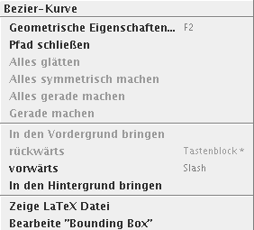
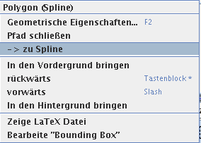
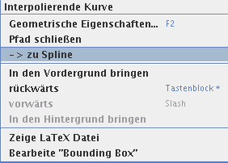
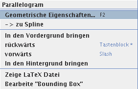
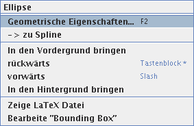
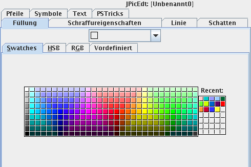

Verändern von Formen
Um ein Objekt zu verändern, klicken Sie zuerst auf einen Teil des
Umrisses, um es so auszuwählen.
- Wenn die
 Schaltfläche inaktiv ist (LOCAL mode,
siehe auch Globaler/lokaler
Punktbearbeitungsmodus), wird das ausgewählte Element in
grün hervorgehoben und seine Ankerpunkte werden zu kleinen Quadraten
(ausgenommen sind Gruppen, wobei Sie die Verfahrensweise von Gruppe zu
Gruppe durch einen Klick mit der Maustaste
II auf die gewünschte Gruppe ändern können, klicken Sie
dazu in dem nun erscheinenden Pop-up-Menü Highlightmodus
umschalten an).
Schaltfläche inaktiv ist (LOCAL mode,
siehe auch Globaler/lokaler
Punktbearbeitungsmodus), wird das ausgewählte Element in
grün hervorgehoben und seine Ankerpunkte werden zu kleinen Quadraten
(ausgenommen sind Gruppen, wobei Sie die Verfahrensweise von Gruppe zu
Gruppe durch einen Klick mit der Maustaste
II auf die gewünschte Gruppe ändern können, klicken Sie
dazu in dem nun erscheinenden Pop-up-Menü Highlightmodus
umschalten an).
- Ist der Modus auf GLOBAL gesetzt
(d. h. ist aktiviert worden), dann wird die Auswahl global
in rot hervorgehoben. Es werden acht Punkte angezeigt, welche es erlauben,
den kompletten ausgewählten Inhalt zu skalieren.
- Der eingebaute Attribut-Editor wird entsprechend zu den Eigenschaften
des ausgewählten Objekts aktualisiert (z.B. Füllung einer
Fläche mit Farbe – zum Füllen mit Farbe und/oder einem
Muster vgl. Das Füllen von
Flächen –, Liniendicke, Pfeile…).
Sie können einen Ankerpunkt verschieben, indem sie mit der
Maustaste I darauf klicken, diese
gedrückt halten und die Maus bewegen, oder sie können die ganze
Auswahl verschieben, indem sie irgendwo auf den Pfad klicken. Wenn
eine Gruppe von Objekten verschoben werden soll, dient das
angeklickte Objekt als Referenz für die Ausrichtung am
Gitter.
Wenn Sie die Position des Objekts präzise festlegen wollen,
können Sie durch Drücken von F2 das Kontextfenster
öffnen; hier lässt sich die Form des Objektes mittels numerischer
Werte anstatt miitels der Maus verändern (siehe dazu
auch Bearbeiten von Punkten –
numerisch)
Tipp: Das Anklicken eines ausgewählten Objekts mit
gedrückter SHIFT-Taste wählt es wieder ab.
Mehrfach-Auswahl und Gruppen
Sie können eine Mehrfach-Auswahl erstellen, indem sie
entweder während des Auswählens
die SHIFT-Taste drücken oder die Objekte, die
sie ausgewählt haben wollen, mit dem Auswahlrechteck
„einhüllen”; das Auswahlrechteck erzeugen sie durch Ziehen
mit der Maus. Sie können dann Verschiebungs- und
Skalierungs-Operationen durchführen, die Regeln dazu finden Sie
im vorhergehenden Abschnitt.
Sie können auch ausgewählte Objekte gruppieren, sodass
sie logisch miteinander verknüpft sind. Das geschieht, indem Sie einen
Klick mit der Maustaste II ausführen und im auftauchenden
Popupmenü Auswahl gruppieren auswählen; nebenbei bemerkt:
die Gruppen sind ineinander verschachtelbar. Um die Gruppierung von
verknüpften Objekten zu lösen, klicken man mit der Maustaste
II irgendwo in die ausgewählte Gruppe um das Popupmenü zu
öffnen, in diesem wählen Sie dann die „Gruppierung
aufheben”-Option aus.
Das Bearbeiten von Winkeln bei Kreisbögen
Sie können bei der Bearbeitung von Objekten zusätzliche
geometrische Einschränkungen definieren oder aufheben, indem Sie
während der Mausbewegung einige Modifikator-Tasten gedrückt
halten. Zusätzlich zur Kombination von Modifikatoren, die auch schon
in Das Zeichnen von Objekten benutzt wurden,
gibt es einen weiteren Modifikator, namentlich CTRL.
Dieser ermöglicht, die beiden Punkte, die den Start- und Endpunkt eines
Bogens definieren, auch in dem Fall zu verschieben, dass ein solcher Start-
oder Endpunkt mit einem Kontrollpunkt für die den Bogen definierende
Ellipse zusammenfällt. Letztere Punkte haben eine höhere
Priorität und somit würde das Ändern des Bogens zu einer
Änderung der Ellipse führen, die Kontrollpunkte würden
nämlich verschoben. Das Drücken von CTRL
dreht diesen Effekt und die Priorität um und somit kann der Kreisbogen
auch in diesem Fall geändert werden.
Kontextmenüs
Wenn Sie mit der mittleren Maustaste ein Objekt anklicken, erscheint
ein Kontextmenü, mit dem Sie verschiedene Operationen auf dem
Objekt ausführen können, so zum Beispiel das Umformen in eine
andere Gestalt, das Bilden und Auflösen von Gruppen usw.
Das unten stehende Bild zeigt das Kontextmenü für eine
Bezier-Kurve/Polygon; dieses Kontextmenü erscheint auch im Zusammenhang
mit den folgenden Objekten:
- Linie
- geschlossene Bezier-Kurve/Polygon

Es gibt vier weitere Kontextmenüs, die Sie in der folgenden Tabelle
mit den zugehörigen graphischen Objekten finden können
|  |
- glattes Polygon
- geschlossenes Polygon
|
|  |
- interpolierende Kurve
- geschlossene interpolierende Kurve
|
|  |
|
|  |
- Ellipse
- Tortenstück
- Kreisabschnitt
- Kreisbogen
- schiefe Ellipse
- Tortenstück (schief)
- Kreisabschnitt (schief)
- Kreisbogen (schief)
|
Die Menüpunkte haben im einzelnen die folgende Bedeutung (es
hängt vom jeweiligen Fall und Zusammenhang ab, welche Einträge
aktiv sind bzw. überhaupt angezeigt werden):
-
- Geometrische Eigenschaften…
- zeigt die geometrischen Eigenschaften des jeweiligen Objektes in einem
popup-Fenster an
- Pfad schließen
- macht aus der offenen Kurve eine geschlossene Kurve
- -> Spline
- ersetzt das Objekt durch einen Spline mit denselben Ankerpunkten
- Alles glätten
- vgl. dazu Zeichnen oder Bearbeiten
…
- Alles symmetrisch machen
- vgl. dazu Zeichnen oder Bearbeiten
…
- Alles gerade machen
- vgl. dazu Zeichnen oder Bearbeiten
…
- Gerade machen
- vgl. dazu Zeichnen oder Bearbeiten
…
-
- In den Hintergrund bringen
- Bilder werden sequentiell aufgebaut: später gezeichnete Elemente
können früher gezeichnete Elemente verdecken. Durch Auswahl
dieses Feldes wird das markierte Element zum “zuerst”
gezeichneten Element, es rückt dadurch in den Hintergrund
- rückwärts
- das markierte Element wird in der Zeichenreihenfolge um eins nach
hinten geschoben, es rückt sozusagen um eine Ebene
rückwärts
- vorwärts
- das markierte Element wird in der Zeichenreihenfolge um eins nach
hinten geschoben, es rückt sozusagen um eine Ebene
rückwärts
- in den Vordergrund bringen
- vgl. Hintergrund, hier rückt das markierte Element in den
Vordergrund
-
- Zeige LaTeX Datei
- zeigt die LaTeX Datei an, die zu dem aktuellen Bild (nicht zum Objekt)
gehört
- Zeige „Bounding Box”
- Hiermit können Sie die tatsächlichen Ausmaße des
aktuellen Bildes verändern. Die Vorgabe sind die kleinste und die
größte x-Koordinate sowie die kleinste und die größte
y-Koordinate. Dies ist dann interessant, wenn Texte oder Kurven aus diesen
Koordinaten herausragen.
Graphische Attribute, wie z.B. Liniendicke, Füllfarbe – zum
Füllen mit Farbe und/oder einem Muster vgl. Das Füllen von Flächen –,
usw… können Sie verändern, indem Sie zuerst das zu
verändernde Objekt auswählen und dann die gewünschten Werte
aus der im Attribut-Editor angebotenen Vielzahl von
Möglichkeiten auswählt. Die verfügbaren Attributen stehen in
enger Beziehung zu den PSTricks Parametern, denn dieses LaTeX Paket bietet
die größte Spanne an Möglichkeiten. Weitere Details lassen
sich der PSTricks
Dokumentation entnehmen.

Änderungen mancher Attribute werden nicht angezeigt, können
aber dennoch im Attribut-Editor geändert werden; dies häng vom
momentanen Inhaltstyp ab. Insbesondere unterstützt die
LaTeX picture-Umgebung nur eine sehr limitierte Teilmenge aller
verfügbaren Attribute (z.B. keine Farbe, keine Textur, nur einfache
Pfeile, keinen Schatten, …). Wenn Sie die volle Spanne von
graphischen Attributen nutzen wollen, die vom Attribut-Editor zur
Verfügung gestellt wird, darunter fallen Schatten, Texturen und
Füllen von Flächen mit Farbe – zum Füllen mit Farbe
und/oder einem Muster vgl. Das Füllen von
Flächen –, oder feinkörnigen gestrichelten Linien,
sollten Sie undebingt darüber nachdenken auf den PSTricks Inhaltstyp zu
wechseln, und \usepackage{pstricks} in Ihre LaTeX Dateien
einzufügen. Sie werden es nicht bereuen, es lohnt sich!